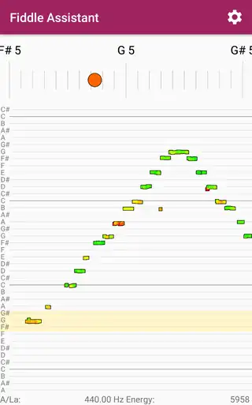
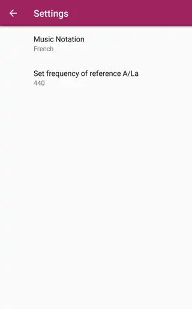

Fiddle Assistant
صوت وفيديو وموسيقى
Music tuner with a logging feature that help to check if the user play in tune.
✓ ترخيص مفتوح (GPL-3.0-or-later) · آخر تحديث: 2021-02-17
1.1.0الإصدار
1.9 MBالحجم
GPL-3.0-or-laterالرخصة
Open in Kanzتحميل APK (1.9 MB)
Download APK
SHA-256: bf14b0b954bc6e9731fb13bcad66a9c47d5176ae16fa23299967ff2b4af07e28


امسح الكود لفتح صفحة التطبيق
Scan to open this app page
لو كنز مش متثبت عندك: نزّل متجر كنز.
Not installed? Get the Kanz store.